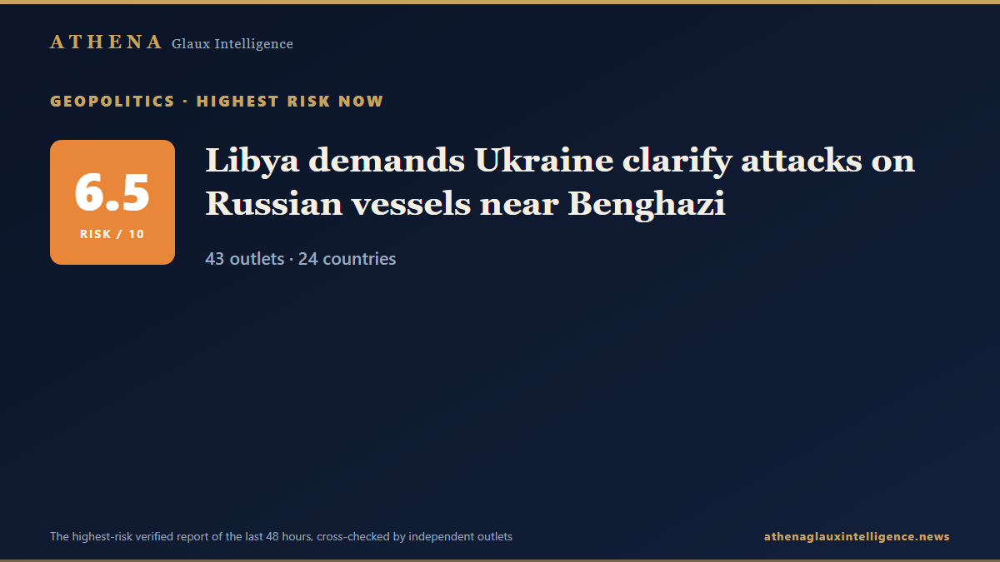
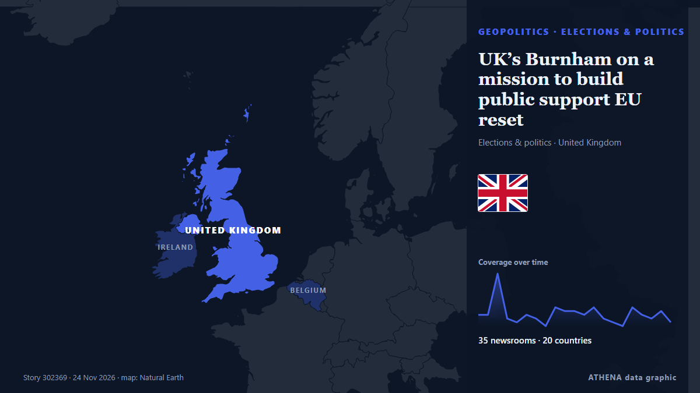

Risk 6.5Elevated
ATHENA Glaux Intelligence — Global news intelligence — every number explained
Geopolitics
All geopolitics >Highest risk now

Rising riskRisk up in the last 24 hours
Maritime & shipping
Maritime desk >Highest risk now
Risk 7.5Elevated
Egyptian Crew Foils 3 Pirate Attacks On San Marino-Flagged Cargo Ship Golden Joy Off Yemen
Read the evidence ›
Watch listChokepoints, ports and other shipping reports
- Strait of HormuzDisruptedattack / strike · risk 6.7 · 129 newsrooms (72 h)
- Kerch Strait / Black SeaDisruptedattack / strike · risk 7.5 · 123 newsrooms (72 h)
- Danish Straits / BalticDisruptedattack / strike · risk 7.5 · 123 newsrooms (72 h)
Every headline, checked across countries.
ATHENA Glaux reads 632 news outlets worldwide. A story becomes a verified event only when independent outlets report it. Each event shows who was first and a risk score with its reasons.
1,183events in 24 hours
632outlets followed
39minutes between updates
Earthquake or flood near you this week?
Type your town and see the earthquakes, floods, storms and official warnings near it, with a 72-hour emergency kit checklist. Free, no sign-up, and your place stays on your device.
Reports drift in from independent outlets - when two meet on the same story, it becomes a verified event.
How ATHENA checks a story
- CollectReports arrive from independent outlets in many countries.
- MatchWhen two outlets meet on the same story, it becomes a verified event.
- ExplainEach event shows who was first, how far it spread and why the risk is what it is.
Global risk outlook
Weekly and monthly reviews: the highest-risk events, the trends by domain and region, and what to watch next.
Read the outlook ›Daily briefing
The ten most important world events of the day, the rising risks and the new events, with every number explained.
Open today's briefing ›
GeopoliticsUK’s Burnham on a mission to build public support EU reset
While he insists it would be unthinkable to rejoin the bloc without another referendum, British PM Andy Burnham has nevertheless reopened the debate over Brexit. from France 24 English
6.6Importance
3.6Risk · moderate
86%Confidence
Energy & Environment
Oman and Saudi Arabia seize 500,000 psychotropic tablets
Muscat: Omani and Saudi authorities seized 500,000 psychotropic tablets in a joint operation, foiling an attempt to smuggle them into another country, the Royal Oman Police said in... from Oman Observer
Geopolitics
US Imposes Sanctions on Dozens Linked to Iran’s Shadow Banking Networks
By Andrea Shalal WASHINGTON, Nov 23 (Reuters) - The Trump administration has issued new Iran-related sanctions targeting dozens of people and entities, the Treasury Department said on Monday… from Al-Monitor
Sponsored
Cybernetics and Artificial Intelligence Lab Welcome to the Cybernetics and Artificial Intelligence Laboratory, established at the Department of Business Administration of the National and Kapodistrian University of Athens. The lab is headed by Professor Dimitrios Thomakos. The lab aims to do research that can be published in top venues. Our research uses tools and methods of Artificial Intelligence, and lies in the following areas: - Forecasting - Decision making - Cyber security - Finance We are always looking forward to collaborating with exceptional students!
Learn more – Cybernetics and Artificial Intelligence LabShips at the world's chokepoints now
Live AIS counts. Tap or hover a bar for the detail.
Latest reports
Spotify back online after brief outage, Downdetector shows
2 arrested on suspicion of burglary, trespass at Prince William’s country home
Anthropic falls below $83 IPO price in swift reversal after record listing
England logged record 5,258 heat-linked deaths this summer: health agency
Port of Gothenburg Invests in Electrification Infrastructure for Container Terminal
Kurdistan rejects Baghdad takeover of border crossings, oil fields
Japan accelerates ICC funding as US sanctions threaten court
‘Alliance is necessity, not choice’: Congress' Raj Kumar Verka targets BJP-SAD tie-up in Punjab
Geopolitics
Saudi Crown Prince vows to defend kingdom with 'strength and resolve' against Houthi attacks
Saudi Arabia will defend its security, sovereignty and national assets “with strength and resolve”, Crown Prince Mohammed bin Salman said on Tuesday, as the Saudi Civil Defence reported 11 people… from The National
Energy & Environment
Burnham calls for ambition after ‘deeply disappointing’ Cop31 disagreements
The Prime Minister warned the deal on the table risked ‘taking backwards steps on climate’, which was why the UK could not support it. from Evening Standard (London)
Technology & Cyber
NATO believes Russia is preparing to launch a satellite equipped with nuclear weapons
Several German media outlets have reported on information held by NATO indicating that the Russians have developed a satellite that can be equipped with nuclear weapons. from Baltic News Network
Geopolitics, Politics & Security
More ›Elections & politics
Netanyahu's incitement is fueling violence against Arabs in Israel
Former deputy governor tells Central Banking prime minister’s proposals are ‘stupid’ and ‘crazy’ from Central Banking
- Diplomacy & summits
Trump wants 100% of Philippine farm trade; DA says price rules
- Diplomacy & summits
US army says detonation of lead explosives in Iowa will proceed
- Intelligence & espionage
UK warns of Russian sabotage threat to companies that supply Ukraine
- Wars & conflicts
Russian Strike Kills Two, Injures 40 in Ukraine’s Zaporizhzhia
Economics, Finance & Markets
More ›Forecasts & recession risk
Ireland ease to victory over Costa Rica at U17 World Cup
The Boys in Green look set to qualify for the knockout stages. from TheJournal.ie
- Stocks, bonds & markets
As Guru Nanak Prakash Purab is celebrated tomorrow, a curious question about dates
- Stocks, bonds & markets
Australia shares join global relief rally after Huang returns to Nvidia
- Inflation & interest rates
Final mile delivery prices climb 10.5% in Q3, GEODIS says
- Banking & credit
Trump: Illegal for Deutsche Bank to leak tax records
Trade, Industry & Infrastructure
More ›Aviation, rail & road
Pakistani astronaut set to make history as first foreigner aboard China's space station
Muhammad Zeeshan Ali will join China's Shenzhou-24 mission as a payload specialist, becoming the first Pakistani and foreign astronaut to enter the Tiangong space station, where he'll conduct… from TRT World
- Aviation, rail & road
CJP Co-Convenor Saurav Das stopped from flying to London amid document scrutiny
- Aviation, rail & road
Disruptions to regional trains, buses, trams on 2nd day of public transport strike
- Supply chains & logistics
At least 36 trains robbed; 14 accused in $22.5 million Nike cargo theft racket in US
- Aviation, rail & road
Israeli Ministry Approves Resumption Of Flydubai Flights After Attack
Energy, Resources & Environment
More ›Climate & climate policy
Caricom disappointed at outcome of COP31
GEORGETOWN, Guyana (CMC) — The 15-member Caribbean Community (Caricom) grouping Monday expressed “its deep disappointment” that delegates who attended the United Nations Climate Change Conference… from Jamaica Observer
- Climate & climate policy
The climate card China has yet to play
- Extreme weather & natural disasters
Democrats win largest US House majority since 1992: media
- Energy security
“K” Line orders LPG dual-fuel VLGC pair from South Korea
- Nuclear energy
Ukraine to issue formal protest to IAEA over appointment of sanctioned Russian official as Grossi's deputy
Technology, AI & Cybersecurity
More ›Space & satellites
8 years, 10 billion km: Japan-Europe spacecraft enters Mercury's orbit
The BepiColombo mission, a collaboration between Japan and Europe, has reached Mercury's orbit after an impressive journey exceeding 10 billion kilometers since its 2018 launch. from Times of India
- Software & cloud
Greece’s data centre boom angers locals near Athens
- Chips & computing
U.S. adds Megaspeed to trade blacklist over export control concerns amid Nvidia controversy
- Cybersecurity
GTA VI hacker released despite being sentenced to 7 years in UK prison
- Artificial intelligence
OpenAI, Cisco Unveil Open Source Tool to Shield Unpatched Linux Systems
Business, Companies & Investment
More ›Startups & innovation
Start-up milestones for Indian plants
As Kaiga unit 1 restarts after a record-breaking refurbishment outage, India's nuclear regulator has given Nuclear Power Corporation of India permission for the First Approach to Criticality for unit… from World Nuclear News
- Investment & capex
ExxonMobil and partners approve $4bn investment in Angola’s Block 15
- Boards & executives
Tony Pua may be summoned over leaked Pardons Board meeting minutes
- Mergers & acquisitions
Axiata to sell 15.64% Edotco stake to Khazanah for RM659.4mil
- Corporate strategy
Costa Concordia Captain Released from Prison After Nine Years
Accidents & emergencies
More ›Accidents & emergencies
Bus and truck collision kills 11 in UAE’s Ras Al Khaimah
Emergency crews launch rescue operations on Al Watan Road as authorities investigate cause of collision. from Express Tribune
- Accidents & emergencies
Six killed, 10 injured in Hanoi eatery blast
- Accidents & emergencies
Mudenda calls for year-round fight against gender-based violence beyond 16 Days of Activism
- Accidents & emergencies
Zanzibar Fire Damages Hotels and Shops
- Accidents & emergencies
Local people say they warned about illegal scramblers before hit-and-run death of John Queenan (62) in Ballina
Three ways to read today
Start with the one that fits your timeVerified events
Ranked by how widely they are reported
- Questions Linger After Jensen Huang’s Return To Nvidia168 outlets · 55 countriesRisk 4.3
- Zelenskyy hails Ukraine's attack on a Russian warship docked at naval base in Libya115 outlets · 47 countriesRisk 6.3
- Iran says 4th oil tanker hits naval mine, catches fire in Strait of Hormuz127 outlets · 43 countriesRisk 6.7
- Iran Claims 5 Oil Tankers Hit Mines In Strait Of Hormuz In 2 Days As UKMTO Reports Projectile Strikes85 outlets · 32 countriesRisk 4.9
- Explained: Nvidia and board still face legal risks after Jensen Huang’s return69 outlets · 28 countriesRisk 3.4
Assessment Desk
Ask a question and read a reasoned assessment of a leading story, with what would prove it wrong.
Open the Assessment Desk ›Today in numbers
| 18:00 | 282 |
|---|---|
| 19:00 | 416 |
| 20:00 | 427 |
| 21:00 | 409 |
| 22:00 | 339 |
| 23:00 | 379 |
| 00:00 | 225 |
| 01:00 | 397 |
| 02:00 | 391 |
| 03:00 | 272 |
| 04:00 | 266 |
| 05:00 | 380 |
| 06:00 | 374 |
| 07:00 | 423 |
| 08:00 | 238 |
| 09:00 | 706 |
| 10:00 | 481 |
| 11:00 | 405 |
| 12:00 | 803 |
| 13:00 | 592 |
| 14:00 | 722 |
| 15:00 | 486 |
| 16:00 | 432 |
| 17:00 | 353 |
Risk of today's events
Geopolitics73Economy & Markets36Technology & Cyber25Business25Energy & Environment21Trade & Industry19Maritime5
Emerging signals
- Sudden surge · Active nowAfrica Cup of Nations
- Sudden surge · Active nowUlleung Island
- Sudden surge · Active nowShenzhou
- New name in the news · Active nowSanta Clara
- Sudden surge · Active nowAkali Dal
Official warnings
- M 6.5 - Vanuatu regionM6.5 · USGS ·
- M 5.9 - 238 km SW of Yanglong, ChinaM5.9 · PAGER yellow · USGS ·
Stay informed
ATHENA Weekly Risk Picture
The week's biggest geopolitical, economic and shipping risks, cross-checked and scored.
Every Friday at 08:00 Athens time · free · in English
Subscribe freeATHENA on Telegram
News the moment it is published: breaking events at risk 6 or more, an hourly round-up, risk-tracker updates and the daily briefing at 10:00.
Free · posts in English · leave at any time
Join the channelSign-up is handled by beehiiv with double opt-in: nothing you type is sent to ATHENA, and every issue has an unsubscribe link.
Risk trackers
More ›Strait of HormuzRisk 7.612 new this week · down from 33 the week beforeRed Sea shippingRisk 6.027 new this week · down from 45 the week beforeGreece–Turkey relationsRisk 3.76 new this week · down from 8 the week beforeCyprusRisk 5.014 new this week · about the same as the week beforeSanctions on RussiaRisk 6.613 new this week · down from 18 the week beforeRussia–Ukraine warRisk 7.6233 new this week · about the same as the week beforeIsrael, Gaza & the West BankRisk 6.666 new this week · down from 87 the week beforeTaiwan StraitRisk 3.110 new this week · down from 19 the week beforeOil & gas pricesRisk 2.929 new this week · down from 43 the week beforeSuez CanalRisk 0.00 new this week · down from 3 the week beforeTurkish StraitsRisk 0.00 new this weekPanama CanalRisk 0.00 new this weekShadow fleetRisk 0.01 new this week · down from 4 the week beforeBlack Sea shippingRisk 7.62 new this week · down from 6 the week beforeCentral banks & interest ratesRisk 4.239 new this week · about the same as the week beforeGreek economyRisk 0.89 new this week · up from 7 the week beforeEastern Mediterranean energyRisk 0.00 new this week · down from 4 the week beforeBalkansRisk 3.313 new this week · down from 25 the week beforeMediterranean migrationRisk 0.00 new this week · down from 4 the week before
Global risk outlook — week 48, 2026 (23–29 Nov) ›
Around the world
Middle East & North AfricaSaudi Crown Prince vows to defend kingdom with 'strength and resolve' against Houthi attacks
55 events
EuropeUK’s Burnham on a mission to build public support EU reset
54 events
South AsiaSheikh Hasina seeks to return to Bangladesh on December 16 on state carrier
52 events
Southeast AsiaVietnam Embassy celebrates Vietnamese Culture Day in Phnom Penh
51 events
North AmericaQuestions Linger After Jensen Huang’s Return To Nvidia
51 events
Russia & EurasiaStrikes on Russian ship in Libya are lawful self-defense, Ukraine says
43 events
East AsiaS. Korean won climbs against U.S. dollar on foreign inflows
41 events
Sub-Saharan AfricaCOP31 ends in failure as countries split over fossil fuels, climate finance
38 events
Latin America & CaribbeanEgyptian Crew Foils 3 Pirate Attacks On San Marino-Flagged Cargo Ship Golden Joy Off Yemen
24 events